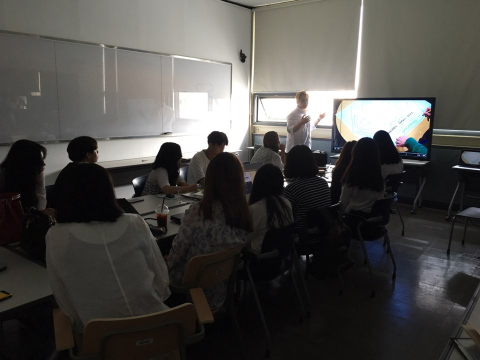
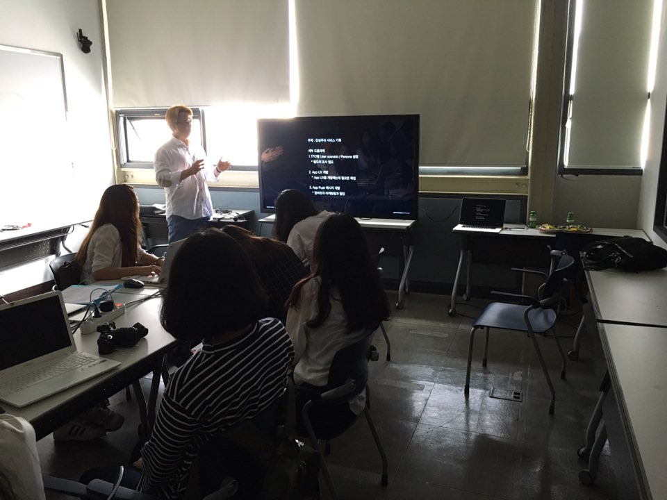

캡스톤 디자인 주간 보고서 [2주차]
| 팀 명 | 11팀 |
|---|---|
| 과제명 | 알바천국 감성 푸쉬 서비스 기획 |
| 회의날짜 | 2016년 9월 6일 ( 09:00 ) ~ 2016년 9월 6일 ( 13:00 ) |
| 참석자 | 성명 | 역할 | 서명 |
|---|---|---|---|
| 안가은 | 팀장, 회의록 작성 | ||
| 김윤신 | 기획 | ||
| 박채원 | 기획 | ||
| 조영지 | 기획 |
| 주간 보고 내용(한주의 내용을 간단하게 정리) |
|---|
|
특강 전 미디어 윌 및 알바천국, 아르바이트 관련 타 앱과 업계 트렌드를 리서치하였습니다. 업체 관계자 분과 만남을 갖고 특강을 수강하였습니다. 저희 팀이 앞으로 기획하게 될 프로젝트에 대하여 더 자세히 들을 수 있었습니다.   특강을 통해 프로젝트의 자세한 내용을 듣고, 팀 내에서 과연 감상적인 푸시 알림이 도움이 되는가에 대한 토론이 있었습니다. 그 후 좀 더 자세한 조사 결과가 필요할 것 같다는 의견이 나와, 알바천국과 모바일 앱 푸시 알림에 대한 설문 조사서를 작성 후 배포하여 결과를 얻기로 하였습니다. 알바천국의 사용자와, 알림 사용 비율, 사용자가 알림기능을 사용하는 이유, 사용자들이 가장 원하는 알림 기능 등의 질문이 포함된 설문 조사서를 작성하였습니다. |
| 다음 진행 방향 및 계획 |
|---|
|
알바 천국의 타겟 분류 작업을 위해 사용자를 그룹핑하여 각 사용자 그룹의 특징 및 니즈들을 조사한다. 다양한 푸시 알림의 사례들을 조사한다. 설문 조사 결과를 통해 푸시 알림의 진행 방향을 모색한다. |
* 주차별 주간 보고서를 필히 제출